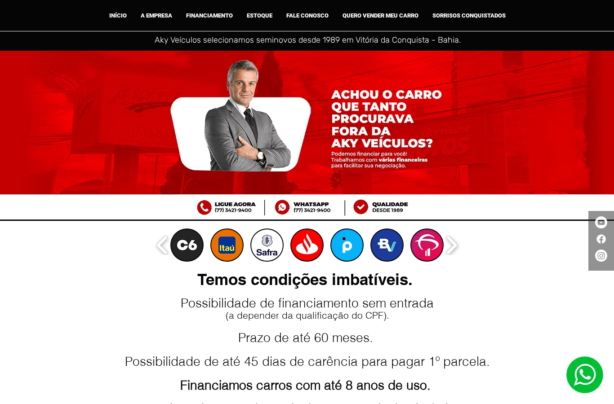
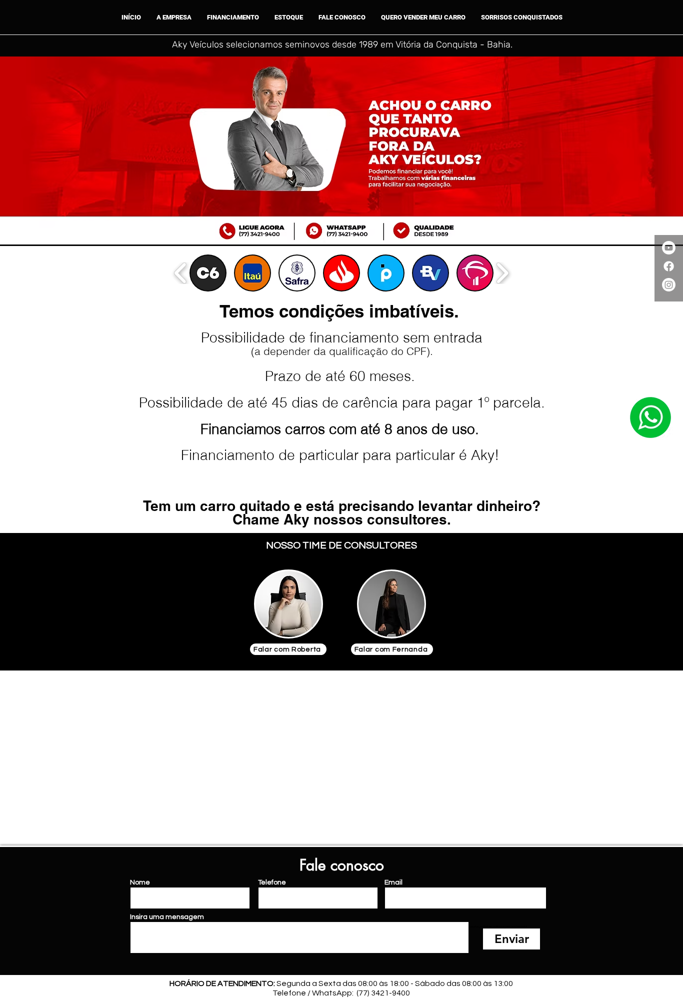

Sistema de Investigação de Marca e Identidade Online
https://www.akyveiculos.com/financiamento
Prioridade: MEDIUM · Cenário: B_AMBIGUOUS_COMMUNICATION · Revisão humana: PENDING
Trata-se de estabelecimento comercial legítimo (revenda de seminovos) que intermedeia crédito veicular e exibe o logotipo do Banco BV em conjunto com outras instituições financeiras. Embora a identidade própria da loja prevaleça e não haja tentativa de personificação do banco, a ausência de declaração formal de correspondente bancário e a omissão de CNPJ/razão social caracterizam comunicação ambígua com pendência regulatória. [Revisor: CONFIRM] A página pertence a uma loja de veículos seminovos (Aky Veículos) que atua na intermediação de financiamentos de veículos. Conforme observado em E-SHOT-VIEWPORT e E-SHOT-FULL, a loja exibe o logotipo oficial do Banco BV em uma esteira de instituições financeiras parceiras (C6, Itaú, Safra, Santander, Pan, Omni). Embora o contexto seja legitimamente comercial e multimarcas, há ausência de CNPJ, razão social e das informações regulatórias obrigatórias de correspondente bancário exigidas pela Resolução CMN nº 4.935/2021 (art. 14). Portanto, a hipótese de comunicação ambígua com pendência de esclarecimento regulatório (REVIEW_REQUIRED) se sustenta plenamente.


| Ref | Tipo | Local | Conteúdo |
|---|---|---|---|
| E-URL | domain | url | URL final: https://www.akyveiculos.com/financiamento (domínio: www.akyveiculos.com) |
| E-DISC-001 | text | search_index | Índice de busca (grounding): akyveiculos.com — **Como utiliza a marca:** Revenda de seminovos que promove linhas de financiamento de até 60 meses e financiamento de particular para particular, indexando e referenciando diretamente a **BV Financeira** entre suas opções de crédito | Não exibe CNPJ nem menção obrigatória à relação contratual de correspondente bancário com a instituição |
| E-SHOT-VIEWPORT | screenshot | viewport | evidence/C6d5765aa54/attempt-1/viewport.png (sha256 b53950f946af6794…) |
| E-SHOT-FULL | screenshot | page | evidence/C6d5765aa54/attempt-1/fullpage.png (sha256 87c49df98cb2338f…) |
| E-TITLE | title | head | Financiamento | Aky Veículos |
| E-META-1 | meta | head | description: O melhor caminho para você conquistar seu semi-novo é Aky! ㅤㅤㅤㅤㅤㅤㅤㅤㅤㅤㅤㅤㅤㅤㅤㅤㅤㅤㅤㅤㅤㅤㅤㅤㅤㅤㅤㅤㅤㅤ #cronos #argo # tr4 #renegade #voyge #vw #gm #chevrolet #fiat #nissan #toyota #honda #peugeot #hyundai #jeep #carros #kia #gol #palio #uno #corsa #onix #prisma #etios #208#207#hb20 #renegade #compass #evoque #bmw #mercedes |
| E-META-2 | meta | head | og:site_name: Aky Veículos |
| E-META-3 | meta | head | og:title: Financiamento | Aky Veículos |
| E-META-4 | meta | head | og:description: O melhor caminho para você conquistar seu semi-novo é Aky! ㅤㅤㅤㅤㅤㅤㅤㅤㅤㅤㅤㅤㅤㅤㅤㅤㅤㅤㅤㅤㅤㅤㅤㅤㅤㅤㅤㅤㅤㅤ #cronos #argo # tr4 #renegade #voyge #vw #gm #chevrolet #fiat #nissan #toyota #honda #peugeot #hyundai #jeep #carros #kia #gol #palio #uno #corsa #onix #prisma #etios #208#207#hb20 #renegade #compass #evoque #bmw #mercedes |
| E-CANONICAL | meta | head | https://www.akyveiculos.com/financiamento |
| E-HEAD-1 | heading | page | Temos condições imbatíveis. Possibilidade de financiamento sem entrada (a depender da qualificação do CPF). Prazo de até 60 meses. Possibilidade de até 45 dias de carência para pagar 1º parcela. Financiamos carros com até 8 anos de uso. Financiamento de particular para particular é Aky! Tem um carro |
| E-HEAD-2 | heading | page | loja de carros em conquista carros em conquista vitoria da conquista automoveis garageiro em conquista garagem em conquista bra financiamentos bv financeira |
| E-HEAD-3 | heading | page | NOSSO TIME DE CONSULTORES |
| E-HEAD-4 | heading | page | AKYVEICULOS |
| E-HEAD-5 | heading | page | seminovos Aky Veículos |
| E-HEAD-6 | heading | page | Aky Veículos selecionamos seminovos desde 1989 em Vitória da Conquista - Bahia. |
| E-HEAD-7 | heading | page | Fale conosco |
| E-HDR | text | header | INÍCIO A EMPRESA FINANCIAMENTO ESTOQUE FALE CONOSCO QUERO VENDER MEU CARRO SORRISOS CONQUISTADOS |
| E-FOLD | text | viewport (acima da dobra) | INÍCIO A EMPRESA FINANCIAMENTO ESTOQUE FALE CONOSCO QUERO VENDER MEU CARRO SORRISOS CONQUISTADOS Temos condições imbatíveis. Possibilidade de financiamento sem entrada (a depender da qualificação do CPF). Prazo de até 60 meses. Possibilidade de até 45 dias de carência para pagar 1º parcela. Financiamos carros com até 8 anos de uso. Financiamento de particular para particular é Aky! Aky Veículos selecionamos seminovos desde 1989 em Vitória da Conquista - Bahia. |
| E-FTR | text | footer | loja de carros vitória da conquista seminovos vitória da conquista carros veículos aki veículos loja de carros olx webmotos mobialto concessionaria 0km icarros taxa 0 bradesco financiamentos bv financeiro santander banco toyota gm fiat vw volksvagem suv hyundai Fale conosco Nome Telefone Email Insira uma mensagem Enviar HORÁRIO DE ATENDIMENTO: Segunda a Sexta das 08:00 às 18:00 - Sábado das 08:00 às 13:00 Telefone / WhatsApp: (77) 3421-9400 |
| E-NAV | nav | header | INÍCIO <https://www.akyveiculos.com/> | A EMPRESA <https://www.akyveiculos.com/a-empresa> | FINANCIAMENTO <https://www.akyveiculos.com/financiamento> | ESTOQUE <https://www.akyveiculos.com/estoque> | FALE CONOSCO <https://www.akyveiculos.com/fale-conosco> | QUERO VENDER MEU CARRO <https://www.akyveiculos.com/quero-vender-meu-carro> | SORRISOS CONQUISTADOS <https://www.akyveiculos.com/sorrisos-que-conquistamos> |
| E-CTA-1 | cta | page | play backward |
| E-CTA-2 | cta | page | play forward |
| E-CTA-3 | cta | page | Falar com Roberta <https://wa.me/557734219400?text=Ol%C3%A1%20Roberta,%20estava%20no%20site%20e%20preciso%20de%20mais%20informa%C3%A7%C3%B5es!> |
| E-CTA-4 | cta | page | Falar com Fernanda <https://wa.me/557734219400?text=Ol%C3%A1%20Fernanda,%20estava%20no%20site%20e%20preciso%20de%20mais%20informa%C3%A7%C3%B5es!> |
| E-CTA-5 | cta | footer | Enviar |
| E-CONTACT-1 | contact | page | Facebook <https://www.facebook.com/AkyVeiculos> |
| E-CONTACT-2 | contact | page | Instagram <https://www.instagram.com/akyveiculos> |
| E-CONTACT-3 | contact | page | <https://wa.me/557734219400?text=Ol%C3%A1%20Roberta,%20estava%20no%20site%20e%20preciso%20de%20mais%20informa%C3%A7%C3%B5es!> |
| E-CONTACT-4 | contact | page | Falar com Roberta <https://wa.me/557734219400?text=Ol%C3%A1%20Roberta,%20estava%20no%20site%20e%20preciso%20de%20mais%20informa%C3%A7%C3%B5es!> |
| E-CONTACT-5 | contact | page | <https://wa.me/557734219400?text=Ol%C3%A1%20Fernanda,%20estava%20no%20site%20e%20preciso%20de%20mais%20informa%C3%A7%C3%B5es!> |
| E-CONTACT-6 | contact | page | Falar com Fernanda <https://wa.me/557734219400?text=Ol%C3%A1%20Fernanda,%20estava%20no%20site%20e%20preciso%20de%20mais%20informa%C3%A7%C3%B5es!> |
| E-CONTACT-7 | contact | page | <https://api.whatsapp.com/send/?phone=557734219400&text=Ol%C3%A1+estava+navegando+pelo+site+da+Aky+Ve%C3%ADculos+e+preciso+de+mais+informa%C3%A7%C3%B5es!!%21&type=phone_number&app_absent=0> |
| E-TXT-001 | text | page | bv financeira |
| E-TXT-002 | text | page | loja de carros vitória da conquista seminovos vitória da conquista carros veículos aki veículos loja de carros olx webmotos mobialto concessionaria 0km icarros taxa 0 bradesco financiamentos bv financeiro santander banco toyota gm fiat vw volksvagem suv hyundai |
| E-TXT-003 | text | page | Telefone |
| E-TXT-004 | text | page | HORÁRIO DE ATENDIMENTO: Segunda a Sexta das 08:00 às 18:00 - Sábado das 08:00 às 13:00 |
| E-TXT-005 | text | page | Telefone / WhatsApp: (77) 3421-9400 |
| E-NET-BLOCKED | network | collection | 1 requisição(ões) bloqueadas pela política: https://frog.wix.com/panorama?src=11&evid=114700&sessionId=689baef1-9c68-42c7-9109-1fc183a244b7&platform=viewer&batchLength=100&batchSize=70220&batchItems=INFO%7Ccom.wixpress.html-client.wix-thunderbo -> empty or oversized URL |
| Dimensão | Sinal | Achado | Refs |
|---|---|---|---|
| VISUAL_IDENTITY | LEGITIMATE | Identidade visual própria da Aky Veículos predomina amplamente no layout, sem mimetização das cores institucionais exclusivas do Banco BV. | E-SHOT-VIEWPORT E-SHOT-FULL |
| DECLARED_COMMERCIAL_IDENTITY | CONFUSION | O estabelecimento apresenta seu nome comercial (Aky Veículos) e telefones de contato, porém omite a razão social e o CNPJ. | E-FTR E-CONTACT-7 E-SHOT-FULL |
| CORRESPONDENT_TRANSPARENCY | CONFUSION | Não há menção formal à condição de correspondente bancário nem direcionamento para a ouvidoria da instituição financeira parceira. | E-FTR E-SHOT-FULL E-HEAD-1 |
| LOGO_USAGE | NEUTRAL | O logotipo do Banco BV é exibido de forma secundária e paritária em um carrossel de financeiras parceiras (junto a C6, Itaú, Safra, Santander, Pan e Omni). | E-SHOT-VIEWPORT E-SHOT-FULL |
| INSTITUTIONAL_LANGUAGE | LEGITIMATE | Comunicação em nome próprio da loja de veículos ('Podemos financiar para você! Trabalhamos com várias financeiras'), sem apropriação indevida de linguagem oficial do banco. | E-SHOT-VIEWPORT E-HEAD-1 |
| SERVICE_JOURNEY | NEUTRAL | A jornada de atendimento direciona os interessados para consultoras da própria revenda via WhatsApp e formulário de contato. | E-CTA-3 E-CTA-4 E-CONTACT-7 |
| CONTACT_CHANNELS | LEGITIMATE | Os canais de atendimento divulgados (telefone fixo e WhatsApp com DDD 77) pertencem exclusivamente à concessionária local. | E-TXT-005 E-CONTACT-3 E-CONTACT-5 |
| CONSUMER_CONFUSION | NEUTRAL | O consumidor compreende que está lidando com uma loja multimarcas de veículos, porém a relação jurídica formal de correspondente com o Banco BV não está explicitada. | E-SHOT-VIEWPORT E-DISC-001 |
Trata-se de estabelecimento comercial legítimo (revenda de seminovos) que intermedeia crédito veicular e exibe o logotipo do Banco BV em conjunto com outras instituições financeiras. Embora a identidade própria da loja prevaleça e não haja tentativa de personificação do banco, a ausência de declaração formal de correspondente bancário e a omissão de CNPJ/razão social caracterizam comunicação ambígua com pendência regulatória.
Nenhum CNPJ ou razão social identificáveis no conteúdo coletado.
| Tipo | Valor | Ref | Contexto |
|---|---|---|---|
| domain | akyveiculos.com | E-URL | |
| social_profile | https://www.facebook.com/AkyVeiculos | E-CONTACT-1 | |
| social_profile | https://www.instagram.com/akyveiculos | E-CONTACT-2 | |
| trade_name | Aky Veículos | E-META-2 | |
| phone | (77) 3421-9400 | E-FTR | |
| <https://wa.me/557734219400?text=Ol%C3%A1%20Roberta,%20estava%20no%20site%20e%20preciso%20de%20mais%20informa%C3%A7%C3%B5es!> | E-CONTACT-3 | ||
| Falar com Roberta <https://wa.me/557734219400?text=Ol%C3%A1%20Roberta,%20estava%20no%20site%20e%20preciso%20de%20mais%20informa%C3%A7%C3%B5es!> | E-CONTACT-4 | ||
| <https://wa.me/557734219400?text=Ol%C3%A1%20Fernanda,%20estava%20no%20site%20e%20preciso%20de%20mais%20informa%C3%A7%C3%B5es!> | E-CONTACT-5 | ||
| Falar com Fernanda <https://wa.me/557734219400?text=Ol%C3%A1%20Fernanda,%20estava%20no%20site%20e%20preciso%20de%20mais%20informa%C3%A7%C3%B5es!> | E-CONTACT-6 | ||
| <https://api.whatsapp.com/send/?phone=557734219400&text=Ol%C3%A1+estava+navegando+pelo+site+da+Aky+Ve%C3%ADculos+e+preciso+de+mais+informa%C3%A7%C3%B5es!!%21&type=phone_number&app_absent=0> | E-CONTACT-7 |
Mapeamento indicativo para apoio à auditoria. Não constitui conclusão regulatória; a decisão definitiva pertence à auditoria.
Fonte: NORMATIVE
Art. 14. O contrato de correspondente deve estabelecer: [...] II - vedação à utilização, pelo contratado, de logomarca ou de outros atributos que sejam similares aos adotados pela instituição contratante em suas agências, postos de atendimento, sítio eletrônico na internet, aplicativo ou outras plataformas de comunicação em rede;
Evidência observada: E-SHOT-FULL E-SHOT-VIEWPORT
Fonte: NORMATIVE
Art. 14. O contrato de correspondente deve estabelecer: [...] III - divulgação ao público, pelo contratado, de sua condição de prestador de serviços à instituição contratante, identificada pelo nome com que é conhecida no mercado, com descrição dos produtos e serviços oferecidos e canais de contato da instituição contratante, inclusive de sua ouvidoria, em local visível, em destaque e em formato legível, por meio de: a) sítio eletrônico do correspondente na internet, acessível na página inicial; b) aplicativo e outras plataformas de comunicação em rede do correspondente; [...]
Hipótese: Divulgação ao público da condição de prestador de serviços/parceria ausente, insuficiente, ambígua ou sem destaque. A norma disciplina correspondentes contratados; o responsável não foi identificado como correspondente.
Evidência observada: E-CONTACT-7 E-FTR E-HEAD-1 E-SHOT-FULL E-SHOT-VIEWPORT
Informação faltante:
Fonte: NORMATIVE
Art. 3º O correspondente atua por conta e sob as diretrizes da instituição contratante, que assume inteira responsabilidade pelo atendimento prestado aos clientes e usuários por meio do contratado.
Evidência observada: E-CONTACT-3 E-CONTACT-5 E-TXT-005
Se o responsável não for correspondente contratado, os indícios podem caracterizar uso indevido de marca ou fraude, fora do escopo da Res. 4.935: avaliar encaminhamento às áreas jurídica/segurança.
Limitações: requisitos contratuais/internos não fornecidos: mapeamento limitado ao texto normativo
Decisão: CONFIRM → REVIEW_REQUIRED / MEDIUM
A página pertence a uma loja de veículos seminovos (Aky Veículos) que atua na intermediação de financiamentos de veículos. Conforme observado em E-SHOT-VIEWPORT e E-SHOT-FULL, a loja exibe o logotipo oficial do Banco BV em uma esteira de instituições financeiras parceiras (C6, Itaú, Safra, Santander, Pan, Omni). Embora o contexto seja legitimamente comercial e multimarcas, há ausência de CNPJ, razão social e das informações regulatórias obrigatórias de correspondente bancário exigidas pela Resolução CMN nº 4.935/2021 (art. 14). Portanto, a hipótese de comunicação ambígua com pendência de esclarecimento regulatório (REVIEW_REQUIRED) se sustenta plenamente.
| Tema | Severidade | Questionamento | Refs |
|---|---|---|---|
| domain_attribution | MEDIUM | Responsável pela página não identificado; a conclusão sobre a marca não pode ser atribuída a um estabelecimento específico. | E-URL |
| Fonte | Consulta / hipótese | URL original | Título / trecho |
|---|---|---|---|
| grounding | Objetivo: Lojas, revendas e correspondentes da região Nordeste que divulgam financiamento da marca.
Execute no Google Search as seguintes consultas (dorks):
- "bv financeira" "bancos parceiros" veículos "Alagoas" -site:bv.com.br -site:bancobv.com.br -site:bvfinanceira.com.br -site:bvinvestimentos.com.br -site:napista.com.br -site:bvopen.com.br -site:meufinanciamentosolar.com.br -site:votorantim.com.br -site:vam.com.br -site:reclameaqui.com.br -site:jusbrasil.com.br -site:jus.br
- ("Banco BV" OR "bv financeira") financiamento (loja OR revenda OR correspondente OR promotora) "Alagoas" -site:bv.com.br -site:bancobv.com.br -site:bvfinanceira.com.br -site:bvinvestimentos.com.br -site:napista.com.br -site:bvopen.com.br -site:meufinanciamentosolar.com.br -site:votorantim.com.br -site:vam.com.br -site:reclameaqui.com.br -site:jusbrasil.com.br -site:jus.br
- "bv financeira" "bancos parceiros" veículos "Bahia" -site:bv.com.br -site:bancobv.com.br -site:bvfinanceira.com.br -site:bvinvestimentos.com.br -site:napista.com.br -site:bvopen.com.br -site:meufinanciamentosolar.com.br -site:votorantim.com.br -site:vam.com.br -site:reclameaqui.com.br -site:jusbrasil.com.br -site:jus.br
- ("Banco BV" OR "bv financeira") financiamento (loja OR revenda OR correspondente OR promotora) "Bahia" -site:bv.com.br -site:bancobv.com.br -site:bvfinanceira.com.br -site:bvinvestimentos.com.br -site:napista.com.br -site:bvopen.com.br -site:meufinanciamentosolar.com.br -site:votorantim.com.br -site:vam.com.br -site:reclameaqui.com.br -site:jusbrasil.com.br -site:jus.br
- "bv financeira" "bancos parceiros" veículos "Ceará" -site:bv.com.br -site:bancobv.com.br -site:bvfinanceira.com.br -site:bvinvestimentos.com.br -site:napista.com.br -site:bvopen.com.br -site:meufinanciamentosolar.com.br -site:votorantim.com.br -site:vam.com.br -site:reclameaqui.com.br -site:jusbrasil.com.br -site:jus.br
- ("Banco BV" OR "bv financeira") financiamento (loja OR revenda OR correspondente OR promotora) "Ceará" -site:bv.com.br -site:bancobv.com.br -site:bvfinanceira.com.br -site:bvinvestimentos.com.br -site:napista.com.br -site:bvopen.com.br -site:meufinanciamentosolar.com.br -site:votorantim.com.br -site:vam.com.br -site:reclameaqui.com.br -site:jusbrasil.com.br -site:jus.br
- "bv financeira" "bancos parceiros" veículos "Maranhão" -site:bv.com.br -site:bancobv.com.br -site:bvfinanceira.com.br -site:bvinvestimentos.com.br -site:napista.com.br -site:bvopen.com.br -site:meufinanciamentosolar.com.br -site:votorantim.com.br -site:vam.com.br -site:reclameaqui.com.br -site:jusbrasil.com.br -site:jus.br
- ("Banco BV" OR "bv financeira") financiamento (loja OR revenda OR correspondente OR promotora) "Maranhão" -site:bv.com.br -site:bancobv.com.br -site:bvfinanceira.com.br -site:bvinvestimentos.com.br -site:napista.com.br -site:bvopen.com.br -site:meufinanciamentosolar.com.br -site:votorantim.com.br -site:vam.com.br -site:reclameaqui.com.br -site:jusbrasil.com.br -site:jus.br
- "bv financeira" "bancos parceiros" veículos "Paraíba" -site:bv.com.br -site:bancobv.com.br -site:bvfinanceira.com.br -site:bvinvestimentos.com.br -site:napista.com.br -site:bvopen.com.br -site:meufinanciamentosolar.com.br -site:votorantim.com.br -site:vam.com.br -site:reclameaqui.com.br -site:jusbrasil.com.br -site:jus.br
- ("Banco BV" OR "bv financeira") financiamento (loja OR revenda OR correspondente OR promotora) "Paraíba" -site:bv.com.br -site:bancobv.com.br -site:bvfinanceira.com.br -site:bvinvestimentos.com.br -site:napista.com.br -site:bvopen.com.br -site:meufinanciamentosolar.com.br -site:votorantim.com.br -site:vam.com.br -site:reclameaqui.com.br -site:jusbrasil.com.br -site:jus.br
- "bv financeira" "bancos parceiros" veículos "Pernambuco" -site:bv.com.br -site:bancobv.com.br -site:bvfinanceira.com.br -site:bvinvestimentos.com.br -site:napista.com.br -site:bvopen.com.br -site:meufinanciamentosolar.com.br -site:votorantim.com.br -site:vam.com.br -site:reclameaqui.com.br -site:jusbrasil.com.br -site:jus.br
- ("Banco BV" OR "bv financeira") financiamento (loja OR revenda OR correspondente OR promotora) "Pernambuco" -site:bv.com.br -site:bancobv.com.br -site:bvfinanceira.com.br -site:bvinvestimentos.com.br -site:napista.com.br -site:bvopen.com.br -site:meufinanciamentosolar.com.br -site:votorantim.com.br -site:vam.com.br -site:reclameaqui.com.br -site:jusbrasil.com.br -site:jus.br
- "bv financeira" "bancos parceiros" veículos "Piauí" -site:bv.com.br -site:bancobv.com.br -site:bvfinanceira.com.br -site:bvinvestimentos.com.br -site:napista.com.br -site:bvopen.com.br -site:meufinanciamentosolar.com.br -site:votorantim.com.br -site:vam.com.br -site:reclameaqui.com.br -site:jusbrasil.com.br -site:jus.br
- ("Banco BV" OR "bv financeira") financiamento (loja OR revenda OR correspondente OR promotora) "Piauí" -site:bv.com.br -site:bancobv.com.br -site:bvfinanceira.com.br -site:bvinvestimentos.com.br -site:napista.com.br -site:bvopen.com.br -site:meufinanciamentosolar.com.br -site:votorantim.com.br -site:vam.com.br -site:reclameaqui.com.br -site:jusbrasil.com.br -site:jus.br
- "bv financeira" "bancos parceiros" veículos "Rio Grande do Norte" -site:bv.com.br -site:bancobv.com.br -site:bvfinanceira.com.br -site:bvinvestimentos.com.br -site:napista.com.br -site:bvopen.com.br -site:meufinanciamentosolar.com.br -site:votorantim.com.br -site:vam.com.br -site:reclameaqui.com.br -site:jusbrasil.com.br -site:jus.br
- ("Banco BV" OR "bv financeira") financiamento (loja OR revenda OR correspondente OR promotora) "Rio Grande do Norte" -site:bv.com.br -site:bancobv.com.br -site:bvfinanceira.com.br -site:bvinvestimentos.com.br -site:napista.com.br -site:bvopen.com.br -site:meufinanciamentosolar.com.br -site:votorantim.com.br -site:vam.com.br -site:reclameaqui.com.br -site:jusbrasil.com.br -site:jus.br
- "bv financeira" "bancos parceiros" veículos "Sergipe" -site:bv.com.br -site:bancobv.com.br -site:bvfinanceira.com.br -site:bvinvestimentos.com.br -site:napista.com.br -site:bvopen.com.br -site:meufinanciamentosolar.com.br -site:votorantim.com.br -site:vam.com.br -site:reclameaqui.com.br -site:jusbrasil.com.br -site:jus.br
- ("Banco BV" OR "bv financeira") financiamento (loja OR revenda OR correspondente OR promotora) "Sergipe" -site:bv.com.br -site:bancobv.com.br -site:bvfinanceira.com.br -site:bvinvestimentos.com.br -site:napista.com.br -site:bvopen.com.br -site:meufinanciamentosolar.com.br -site:votorantim.com.br -site:vam.com.br -site:reclameaqui.com.br -site:jusbrasil.com.br -site:jus.br
Liste de forma abrangente as páginas públicas encontradas (até 12 resultados distintos), informando para cada uma o nome do estabelecimento/perfil, a URL e como a marca é utilizada (destaque visual, título, feirão, simulador, redes sociais e se há ou não identificação clara de CNPJ e condição de correspondente bancário). H5-establishment:regiao-Nordeste | https://www.akyveiculos.com/financiamento | akyveiculos.com **Como utiliza a marca:** Revenda de seminovos que promove linhas de financiamento de até 60 meses e financiamento de particular para particular, indexando e referenciando diretamente a **BV Financeira** entre suas opções de crédito | Não exibe CNPJ nem menção obrigatória à relação contratual de correspondente bancário com a instituição |
Original: https://www.akyveiculos.com/financiamento
Final: https://www.akyveiculos.com/financiamento
| Artefato | Caminho | SHA-256 | Bytes |
|---|---|---|---|
| screenshot_viewport | evidence/C6d5765aa54/attempt-1/viewport.png | b53950f946af67944ed1c0bed9c7ff1bb692d226690f0568af2e74421b6d46f5 | 458270 |
| screenshot_full | evidence/C6d5765aa54/attempt-1/fullpage.png | 87c49df98cb2338f0d4396438b886af4c6cf24deb7c31d3553cab914f38c2969 | 540842 |
| html | evidence/C6d5765aa54/attempt-1/page.html.txt | 5abb1a31a1984224c7542e959fc7d7e7d572d32d673e3700bac56f27cd55e6ef | 847859 |
| text | evidence/C6d5765aa54/attempt-1/text.txt | ca1f74e2f6e0ad3bb879ec0c33609ae63633319f38f514184561d5a30dfd3608 | 1349 |
| page_data | evidence/C6d5765aa54/attempt-1/page.json | e3748ee23320c2ee73f0c178865a2691141dabd8b2bad8914fc46f87c52e9934 | 16025 |
| Quando | De | Para | Nota |
|---|---|---|---|
| 2026-11-25T18:12:09+00:00 | DISCOVERED | QUEUED | prioritised (score 1.0) |
| 2026-11-25T19:21:06+00:00 | QUEUED | COLLECTING | |
| 2026-11-25T19:21:12+00:00 | COLLECTING | COLLECTED | |
| 2026-11-25T19:21:12+00:00 | COLLECTED | ANALYZING | |
| 2026-11-25T19:21:43+00:00 | ANALYZING | REVIEWING | |
| 2026-11-25T19:21:57+00:00 | REVIEWING | COMPLETED |